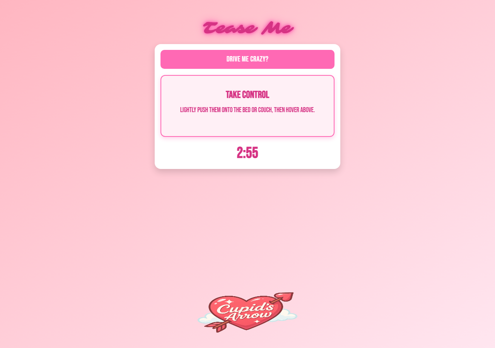

Fast playful loops
Prompts, controls, and timers keep the experience moving.
Beta transmission / 006
A playful, consent-forward game that gives couples a spark, a timer, and the next move.

The idea
006 / CACupid’s Arrow turns indecision into momentum. Randomized prompts and simple timers create a lightweight game loop that keeps two people present, playful, and engaged.
The beta is deliberately direct: choose the experience, draw the next prompt, agree together, and let the timer carry the moment forward.
Prompts, controls, and timers keep the experience moving.
Refine modes, pacing, preferences, and replay value through testing.
Every shared challenge starts with mutual comfort and participation.